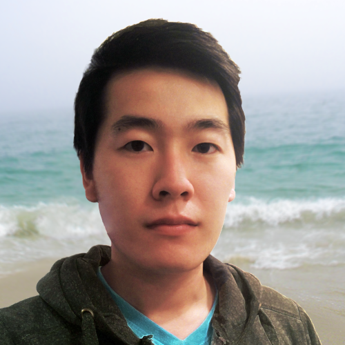
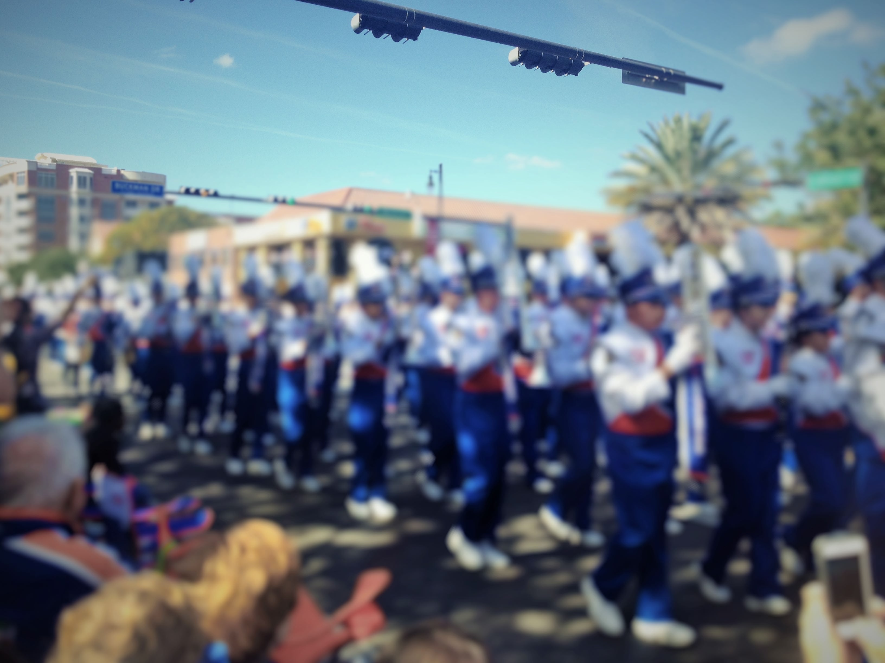
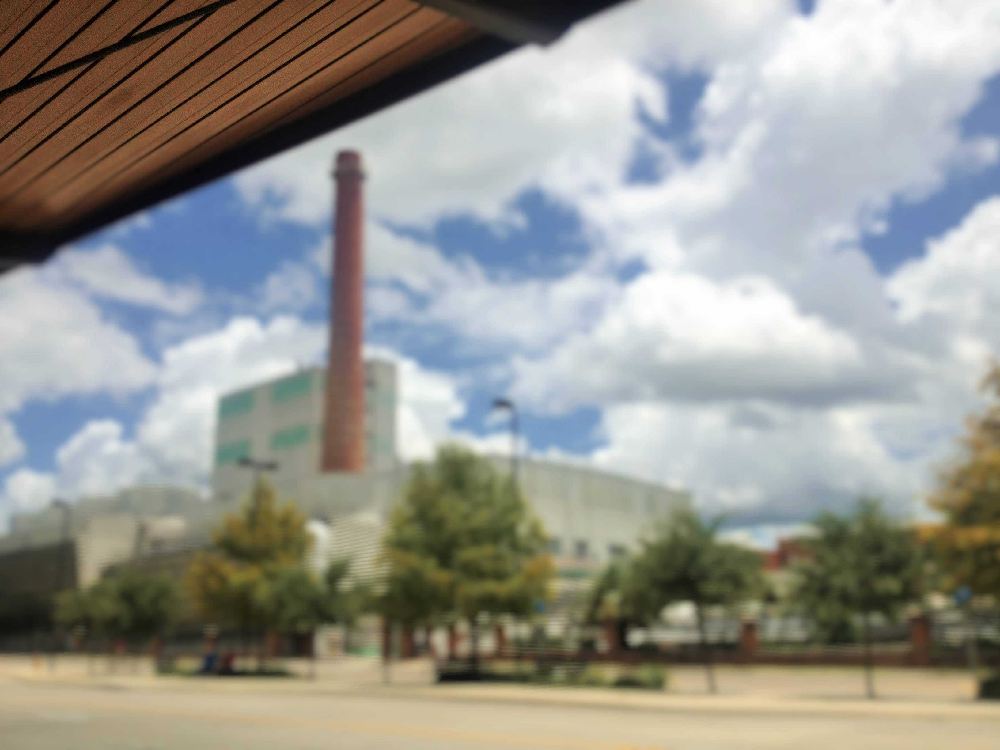

        <section id="about">
            <div class="wrapper">
                <article class="active" data-urlbackground="assets/img/3.jpg">
                    <h3>Education</h3>
                    <div class="image"></div>
                    <p>Currently a sophomore at the University of Florida, studying computer engineering. Expected to graduate May 2016.</p>
                    <p><strong>Coursework:</strong> Technical Communications, Discrete Mathematics, Programing Fundamentals, Data Structures and Algorithms (in progress), Computer Organization (in progress).</p>
                </article>

                <article data-urlbackground="assets/img/2.jpg">
                    <h3>Interests</h3>
                    <div class="image"></div>
                    <p>Front-end engineering, user design experience, branding and design, web development and mobile apps.</p>
                    <p><strong>Experience and Exposure:</strong> C++, Java, HTML, CSS, JavaScript, jQuery, Firefox Add-on SDK, Google Chrome Extensions, Chrome Packaged Apps.</p>
                </article>

                <div class="clear"></div>

                <article data-urlbackground="assets/img/1.jpg">
                    <h3>Myself</h3>
                    <div class="image"></div>
                    <p>I'm just a guy with an interest with people and technology.</p>
                    <p>Currently working on this site with responsive design and solid colors and lines in mind.</p>
                    <p>
                        <a href="https://github.com/atthehotcorner" class="button" target="_blank">GitHub</a>
                        <a href="http://www.linkedin.com/pub/abraham-yuen/64/1a1/a41" class="button" target="_blank">LinkedIn</a>
                    </p>
                </article>

                <article data-urlbackground="assets/img/4.jpg">
                    <h3>Current</h3>
                    <div class="image"></div>
                    <p><strong>Goals:</strong> To get an internship that is focused on learning and training from mentors, and as well as develops computer engineering experience.</p>
                </article>